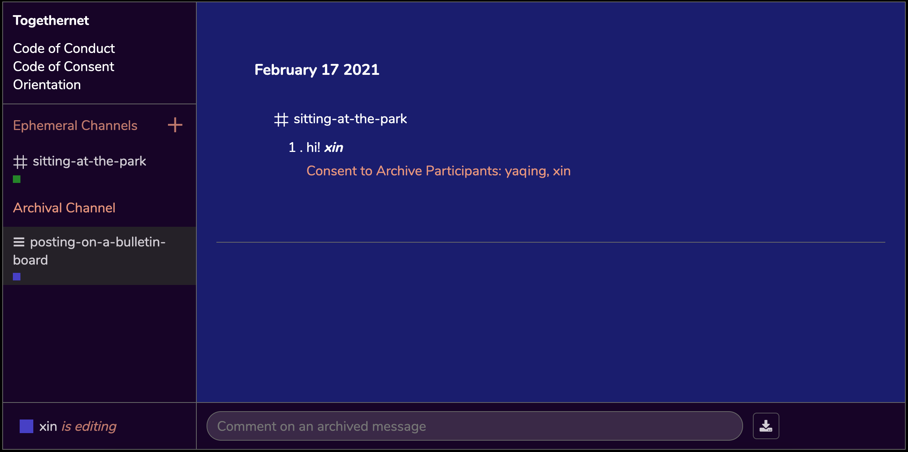

Togethernet
thoughtful software for consentful organizations
Togethernet is a collaborative archiving software in the form of a desktop web app that allows both peer-to-peer (P2P), traceless messaging as well as archived communications.
Designed around the ethos of data transparency and consent, the goal of the software is to transform digital rights practices such as the right to be forgotten into an embodied practice through the reimagination of software architecture and user experience.
This tool and initiative stands on the shoulder of Consentful Tech Zine by Una Lee and Dann Toliver and Design Justice Network Principles — by considering transparency and consent every step of the way, the source code serves as both a technical and a moral document that seeks to uncover systems of power and uncertainties embedded in network technologies.
Communication Channels
The software contains two types of communication channels: the Ephemeral Channel and the Archival Channel.
Ephemeral Channel

The Ephemeral Channel uses the WebRTC peer-to-peer protocol, which means conversations do not go through a centralized server (bye google facebook AWS 👋🏼) and are permenantly erased once the browser closes.
The privacy level in the Ephemeral Channel is comparable to talking to friends on a picnic blanket at the park — your conversations won’t be heard unless someone is intentionally trying to listen in.
Archival Channel
The Archival Channel publishes meeting notes to a centeralized database that your organization may self-host or host on a third party’s server.
The security level here is comparable to posting a note on a bulletin board — your words are now floating out there on the World Wide Web as a form of public record, and others may quote or use it in ways that are outside of your control. Organizations often need to create content that needs to be seen by the public and this is useful for that.
Consider how the content and tone of your speech might change tallking to friends at the park versus writing a note for the bulletin board. By making the public and the private more explicit in the digital space, Togethernet aims to transform digital rights policies into an embodied, everyday practice.
Getting Started
To begin, we invite you to read through the Code of Consent document we have prepared for you.
The document will take 15~30 minutes to go through. We would like to make sure that you feel informed before proceeding to the software orientation.
Join the Community!
Togethernet is at an early stage of development. If you're interested in joining a community of digital consent enthusiasts to become a Togethernet stakeholder, we would love to invite you to join Togethernet's Discord.
Before entering the community, please read and agree to our Community Code of Conduct.
Togethernet v0.1 Team
- Lead Artist 🧛🏻♀️ Xin Xin
- Lead Software Developer 🏜 Charlotte Yaqing Wen
- Lead Writer 🧚🏾♂️ Neema Githere
- Advisor 😶 Lauren Lee McCarthy
Special Thanks
Kemi Sijuwade-Ukadike, J. Soto, Sally Szwed, Roddy Schrock, Maddie Pinney, Eric Tang, Dorothy R. Santos, Kate Hollenbach, Lee Tusman, An Xiao Mina
This project supported by and produced at Eyebeam.